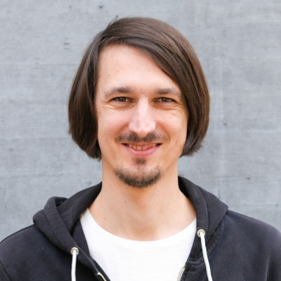

<div class="hero">
  
  <div>
    <h2 id="about-h">About Me</h2>

    <p>
      I’m a computer scientist and mathematician who enjoys developing new solution strategies
      and tackling challenging problems by combining
    </p>
    <ol class="about-list">
      <li>classical mathematical proof methods</li>
      <li>modern computer-science techniques such as computer-algebra systems and SAT/SMT solvers, and</li>
      <li>computing resources from cluster/HPC environments.</li>
    </ol>

    <p>
      This interplay was crucial for several  breakthroughs on  questions that had remained open for decades.
    </p>

    <p>
      In recent years, I’ve worked across computer science and mathematics—from theory to applications:
    </p>
    <ul class="about-list">
      <li>data structures, algorithms and performance optimization</li>
      <li>computational geometry</li>
      <li>computer graphics and vision</li>
      <li>combinatorics and graph theory</li>
      <li>mathematical and combinatorial optimization (linear/convex/general)</li>
      <li>Boolean logic, circuits, and axiom systems</li>
      <li>symbolic artificial intelligence and automated reasoning (SAT/SMT solving, formal verification)</li>
      <li>cryptography and IT security.</li>
    </ul>


    <div class="social">
      <a class="chip" id="emailLink" href="#">E-Mail</a>
      <a class="chip" href="https://github.com/manfredscheucher" target="_blank" rel="noopener">GitHub</a>
      <a class="chip" href="https://orcid.org/0000-0002-1657-9796" target="_blank" rel="noopener">ORCID</a>
      <a class="chip" href="https://scholar.google.com/citations?user=PmkZl8wAAAAJ" target="_blank" rel="noopener">Google Scholar</a>
      <a class="chip" href="https://www.linkedin.com/in/manfred-scheucher" target="_blank" rel="noopener">LinkedIn</a>
    </div>
  </div>
</div>
